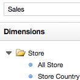
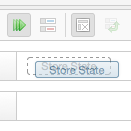
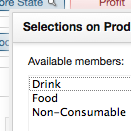
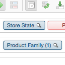

Saiku is a modular open-source analysis suite offering lightweight OLAP which remains easily embeddable, extendable and configurable.
Our RESTful server connects to existing OLAP systems, which then powers user-friendly, intuitive analytics via our lightweight JQuery based frontend.
|  |  |  |  |
These will hopefully make it into 2.3